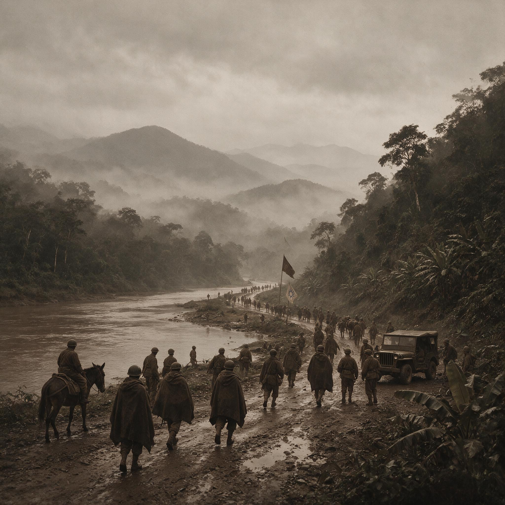

第 18 章
胜利的暗面
会师的照片在重庆的报纸上占了半版。照片中央，两个中国士兵在握手。一个穿着驻印军的美式军服，绑腿齐整，腰间挂着一只水壶；另一个是滇西部队的模样，衣袖短了一截，领口敞着，颧骨在闪光灯下

滇西缅北会师历史照片
AI 生成插图，非史实影像。
突起得厉害。照片说明只写了“会师”两个字。
至于照片里的人，在快门按下之后的去向，报纸没有再提。他们在芒友以北的山坡上站了几分钟。滇西的部队要继续留在国内休整，或者说，等待一场新的征调。
驻印军的先头部队没有久留，公路还在向南伸展，指挥部的箭头已经指向腊戍、乔梅。两支军队短暂交汇，各自转身。
转身之后，那张照片开始复制，被送往重庆、昆明、贵阳，出现在学校的墙报和街头的宣传栏上。会师的象征被固定下来：两线夹击已经合拢，中国军队在缅甸北部完成了合围。
照片里看不到的是，滇西远征军的多数建制并不完整，连队兵员缺额普遍在三分之一以上，几个师在龙陵、松山一带的伤亡超过了原编制的一半。而这些数字，当时还没有被放进任何一本官方纪念册里。
一个月之后，在昆明西站，另一场典礼把这种荣光推向了更高的位置。1945年1月28日，一支由一百一十三辆卡车组成的车队从印度列多出发，经过二十四天跋涉，抵达昆明。车站外的广场上搭起高台，悬着中美两国国旗。军政要员与美军将领并排站立。记者们抢拍一个瞬间：一把剪刀，一条缎带，一块新路牌。路牌上写着“史迪威公路”。
新闻影片随后在重庆和华盛顿放映，旁白的声音平稳而兴奋，宣布通往中国的陆上动脉已经打通，盟国的援助将由此源源不断。这一天被当作一个转折点。重庆方面急于把它解释为坚持抗战的成果，华盛顿则把它说成援华政策的证明。双方都从这块路牌上取走了自己需要的那一部分。
没有人讨论这条公路为什么在1945年1月才真正通车，也没有人把这件事和欧洲战争的节奏放在一起比较：德国投降已不到四个月，太平洋战场上美军的轰炸机已经从马里亚纳起飞。列多公路的意义，更多不在它当时能运进多少物资，而在它作为一种象征，能够在宣传中被重复使用多少次。
就在昆明西站举行典礼的那几天，后方几处兵役和抚恤机构里的会计们，正在面对另一组数字。远征军和驻印军的伤亡汇总陆续到达。根据战后统计，第二次入缅作战，中国驻印军伤亡一万八千余人，歼灭日军四万八千余人；滇西中国远征军伤亡六万七千四百零三人，歼灭日军两万一千零五十七人。
这些数字被纳入战报，写在呈报军事委员会的文件里。它们与芒友会师、公路通车一起，构成了1945年初中国战场叙事的两面：一面是战场上终于取得的胜利，另一面是胜利所必需的代价。代价被统计出来，列成表格，注上“已核实”“实”“失踪”。
失踪是一个含义模糊的词。在松山、龙陵、密支那的阵亡名册里，许多人被归入“失踪”。他们可能死在野人山，可能死在密支那郊外的沼泽里，也可能在逃亡中失散，名字再也没有回到任何一支连队。1942年翻越野人山时那个庞大而混乱的撤退，给后来留下了大量无法核对的信息。一个士兵如果死在雨天的河边，尸体在几天内就会被水冲走，没有人能替他登记。他的家属可能在四川、贵州、湖南的某个村庄里等信。信一直没有来。
村公所的人会说，没有消息，可能是失踪。失踪，就是既不能说死了，也不能说活着。这个状态使一切事情都无法办理：没有阵亡证明，就没有抚恤；没有抚恤，家庭便失去了一条最现实的支撑线。
而国民政府的财政状况，使得即便有了确切的阵亡证明，抚恤金也未必能够及时到达。1945年春天，一份由军事委员会相关部门拟定的通告提到，远征军阵亡官兵抚恤金的发放，因预算核拨程序及款项筹措困难，将酌情延期办理。“酌情”和“延期”是两个温和的词。它们出现在公文里，表示制度仍在运转，只是需要时间。
但在云南、贵州一带的兵源县，时间已经不能解决问题。春耕开始，失去主要劳力的家庭，有些靠女人和老人拉着犁，有些把地里的田埂挖开，改种一点不需要精耕的作物。没有种子。种子的钱，本来可以从抚恤金里出。
现在抚恤金没有来，信用社的账上还挂着去年的债。一些家书寄到县政府，内容是请求查找亲人的遗骸，或者发放拖欠的抚恤。信纸薄，墨水淡，末尾大都写着一个“恳”字。
这些信进入县府的门房，有的被转给团管区，有的留下来，和地税册、兵役名簿堆在一起，再没有人翻动。在更西南的方向，缅北的雨季还没有开始，一些中国士兵已经不再属于任何一支部队。他们在战事结束之后没有回到集结地。有人从野人山的撤退开始就流落在克钦山区和伊洛瓦底江以西的村庄里，靠替人种田、赶马帮、修补铁器活下来。1944年到1945年的反攻没有把他们全部带回来。反攻的路线并不覆盖所有村庄。有些士兵听说中国军队打回来了，走出村子去找部队，走到半路又停下来。他们说不清自己的名字和番号，也拿不出任何证明。
还有的人在缅甸山村住得久了，与当地人有了家室，便在原地留下。他们不说中国话，不再穿军装，在村与村之间迁徙。只有少数几个人知道，他们是中国人，是打过仗的兵。但他们不敢说出来。
日军的势力虽然已经溃退，缅北山地的秩序却并不安全，地方武装、流散匪兵、不同的政治势力都在山间活动。一个异国士兵的身份，可能招来新的祸端。于是他们继续隐匿。
白天上山砍柴，夜里睡在竹楼边上。如果有人说他们是中国人，他们摇头。仰光以北的英国行政机构在1944年底到1945年初开始接触缅北战后的秩序问题。英方的估计中，有一项是关于滞留当地的中国士兵人数。这些数字前后不一致，有的人数计在数百，有的称上千人。
混乱的原因不全是统计困难。在盟军的档案里，这些士兵有时被算作中国远征军，有时被算作缅甸居民，有时干脆不算。中国方面的代表没有足够的人力到缅北山区逐一核实。交通不便，语言不通，边境地带的行政归属又不清楚。
士兵们不会主动到山外的登记站去声明自己的身份。因为他们不知道，声明之后会发生什么。是回家，还是重新被编入一支队伍？是领到一点路费，还是被当作逃兵？在1945年初的缅北，这些问题没有明确的答案。
中国的内战已经隐约成形。重庆和延安之间的摩擦在云南、贵州一带时有发生。滇西远征军的部队在会师后各自归建，有的开往昆明附近驻防，有的开始补充新兵。补充的速度远远落后于缺额。
新兵的年龄、体检标准、训练时间都大幅下降。老兵们说，打完缅北的人，已经不多。新来的年轻人没见过炮，没走过山路，有的连步枪的分解结合都没有学会。连队里训练得好的士官，在一次一次战斗中消耗掉了。军士的缺少使部队的战斗力很难恢复。
滇西远征军的几个师，在1945年春天既没有足够的兵员，也没有足够的军械。他们在会师照片里的位置，很快就被新的宣传材料覆盖了。重庆方面需要用这条公路、这场胜利来证明自己还能打，还能与美国合作。于是，胜利的影像不断地再生产：公路上的卡车、会师的握手、盟军的军旗。
而那些被消耗掉的人，不再出现在镜头里。驻印军的士兵也没有全部回国。
1945年初，驻印军继续在缅甸战场配合英军作战，其后一部分被空运回国，编入新的战斗序列。空运的能力有限。飞机优先运送装备和少数精锐部队。许多士兵仍然要沿着公路和山路返回。运输途中，管理变得松散。
一些人离队，一些人被截留在兵站。兵站的说法是，等候命令。命令迟迟不来。
士兵们不知道自己是该留在印度，还是可以回国。英国在印度的军事机构有自己的考虑。战争结束后，印度与缅甸之间的运输线上，不再有对中国部队的优先安排。大量物资要运往欧洲和太平洋方向。中国士兵在营地外等待。一天比一天热。雨季来临之前，蚊帐不够，药品短缺，痢疾和疟疾在营区里反复发作。有些人死在印度东部的兵站里。他们的名字，可能被列入驻印军的伤亡数字，也可能只被写成“途中病故”。
对于家属来说，“病故”和“阵亡”在抚恤标准上不一样。但没有人告诉他们区别在哪里，也没有人告诉他们，死亡发生的地点是在东印度的一个兵站，还是在缅北的一条公路旁。
历史学家的笔在后来写到1945年初的中国远征军时，更愿意停留在通车典礼和会师合影上。这是可以理解的。那些事件有明确的日期、地点和人物，有照片可以作证，有新闻报道可以引用。它们站在历史亮处，线条清晰，适合放进纪念册和展览厅。
而那些没有被写入战报的士兵，则站在暗处。他们不是历史的反面，只是胜利叙事没有照到的地方。
时间线上有一个节点，是公路通车；另一个节点，是一个妇女在贵州北部的家中收到一张“失踪”通知；还有一个节点，是一个士兵在伊洛瓦底江以西的村子里把一支旧步枪埋进土里，决定从此不再说自己是中国人。这些节点并不交叉。它们平行地分布在1945年的地图上，共同构成胜利之后的中国。
在昆明，通车典礼结束后的几个星期，列多公路的运输能力开始被重新审视。公路穿过缅北山区，地形复杂，雨季时经常塌方。车队从列多到昆明，单程需要三到四周。每辆卡车能运的物资有限，还要携带自己的油料和修理工具。每月运入中国的物资总量，远不足以改变国民政府的军事供应结构。官员们在内部报告里写得很明白：这条公路在军事上已经来迟了。欧洲战事即将结束，美国在华的战略重心开始转向战后安排。租借物资的分配、航线、港口的使用权，都在重新讨论。
列多公路作为援华象征的价值还没有完全兑现，作为战略通道的价值已经开始下降。但在公开的宣传里，它仍然是一条“胜利之路”。
路牌被反复拍摄，印在报纸头版，制作成明信片。明信片背面写着“国际通道，贯通中印”。寄信的人多是城里的学生和公务员。他们并没有走过那条路。
在云南的一个县城里，抚恤科的人也在整理一套完全不同的“路”。那是阵亡者名录和家属名册。册子上的名字有一些对不上。士兵的名字在军队里就常常有误写。方言重的人，报名时说不清楚，文书随手写一个同音字。后来阵亡了，连队的名单、师部的名册、县府的兵役底册，三个名字互不相同。
抚恤科的人说，名字对不上，就不能发钱。因为发了，可能错，可能重，可能被冒领。他们于是要求家属提供证明。证明要从村里开，从乡里盖印，再送到县府核对。来回几百里路，对于一个失去丈夫或儿子的家庭来说，已经超出了能力。
有的家庭只来了一个老人，坐在县政府门口，手里捏着一张皱了的阵亡通知。他等了几天，没有结果。门房每天看他一早来，傍晚走。老人说，儿子死了，路太远，他走不动了。但名字不对，谁也没有办法。这件事在县府里被当成一个麻烦，而不是一个悲剧。
办事的人说，这样的案子很多，一个一个核，核到明年也核不完。通货膨胀使抚恤金进一步缩水。即便发放到位，金额也早已不能维持一个家庭的基本生活。1945年春天，云南的米价仍是战时水平，但法币的购买力已经大不如前。一名士兵的阵亡抚恤金，按照战前的标准，大约可以买几亩地。但按照1945年的实际币值，可能只够买几十斤米。
差距如此之大，以至于许多遗属宁愿不要钱，只求一个说法。要什么说法呢？要一个“烈士”的名分，要一块木牌，要村口那座碑上刻上儿子的名字。但这些也需要层层审批。审批的时间，比一个人的悲伤还要长。等批准下来，家中的老人可能已经不在了。
这就是胜利的暗面。不是有人在胜利中作恶，而是胜利的机制本身，在把一部分人推到光里，把另一部分人留在暗处。光里的人，是公路、旗帜、剪彩的剪刀、握手的两名士兵。暗处的人，是那两名士兵后来的命运，是那些没有出现在照片里的连队，是那些被归入“失踪”而永远无人再提的名字。
他们不是历史书要删除的人，而是历史书从来没有给他们留出位置。他们站在1945年初的中国大地上，人数很多，但彼此分散。没有人把他们召集起来，也没有人替他们提出共同的诉求。
密支那城外的一个战地记者在1944年的雨季见过一些这样的士兵。他在后来的报道里只写了很短的一句：“他们看起来很疲倦。”疲倦，是对身体状态的描述，也是对精神状态的一种不是描述的描述。战役结束后的疲倦，被胜利这个词盖住了。报纸的读者更关心打没打赢。打输了，有人问责；打赢了，大家鼓掌。
至于打赢之后，那些仍然留在战场上的人，既不是输家也不是赢家，他们只是继续向前走。有人向北回国，有人向南追敌。还有人留在原地，因为走不动了。走不动的士兵最容易被遗忘。他们的同伴继续行进，官长的命令不会为一个走不动的人停下来。
兵站的人说，你在这里等，后面有车。车没有来。兵站撤了。附近的老百姓看见一个穿破军装的人坐在路边，给他一碗水。又过了几天，那人不见了。谁也不知道他去了哪里。
这种情况在战争末期的缅甸和云南边境并不罕见。没有哪个部门会为“一个士兵在路边消失”写一份报告。公路开通的日子也有它真实的影响。最直接的变化是，一些在印度的中国士兵终于看到明确的路线，知道自己可以回去。
但知道的只是“可以”，不是“什么时候”。行期由上面定。上面的上面，还有盟军的安排。战争还在进行，船只、飞机、公路上的运力都有限。士兵们只能在营房里等。
等待的时间越长，纪律越松。赌博、私卖军需品、与当地人的纠纷开始增多。这些都是战后的正常现象。但在当时的语境里，它们构成了中国军队在印度的一个不光彩侧面。
盟军方面的报告里开始出现对中国士兵逃逸、滞留、非法交易的记录。这些记录后来被个别引用，用来证明中国军队的素质问题。
很少有人注意到，这些行为发生在战争结束之后，发生在一支已经远离祖国、长期得不到明确命令的部队里。把一个士兵在印度的兵站外卖掉一双军靴，与他在密支那阵地上的表现并列起来，本来就不公平。但历史的书写，从来不是每一条都追求公平的。
1945年初的这些压力，已经开始逐步改变中国远征军与美军之间的关系。美军在训练、补给和运输上的支配地位，使中国军官在许多具体事务上无法做出决定。
公路虽然以史迪威的名字命名，但史迪威本人已经离开中国战区。他的名字留在路牌上，成了一种被反复使用的符号。而中国士兵在公路沿线等待、生病、死亡的事实，与这个名字的距离很远。
盟军体系内部的分工越来越清楚：美国提供装备和运输，英国控制印度和缅甸的通道，中国出兵、出人、出命。这个体系的效率，在战争期间被战斗的紧迫性掩盖了。战争一旦放缓，体系内部的价差就暴露出来。同一个胜利里，有人得到军功，有人得到援助，有人只得到一句“胜利了”。
在缅北山区，那个埋掉步枪的士兵，在雨季快来的时候离开了村子。他向南走，离开中国军队反攻的路线，进入更偏远的山地。他知道公路通车了，但公路离他的村子很远。他也没有身份证件。
他只有一件旧军装，一套在缅甸人家换来的粗布衣服。他把军装留在了一个废弃的竹棚里。
从那天起，他不再穿任何能标明身份的东西。他的脖子上挂着一块铜牌，那是当年从远征军出发时领到的，上面压着姓名和编号。铜牌他舍不得扔，但也不敢露出来，于是用布条缠了几层，系在胸口。走路时布条和铜牌一起在衣服里面晃。这个动作，别人看不到。
他的家人远在云南东部，以为他早已死在野人山。这个士兵在1945年的春天没有回家。他没有家可以回。他不敢确定自己还是不是一个兵，还是不是那个人。
他只能在缅北的大山之间走来走去，从一个寨子到另一个寨子，干点短工，换口饭吃。夜里有人问他从哪里来，他说，从北边来。北边是哪里？他笑笑，不说了。
这个士兵并不是个例。在战后初期的缅北和滇西边境，有一批这样身份模糊的人。他们没有阵亡，没有受降，没有战俘，没有遣返。他们活在文件之外。
有人说他们是逃兵，有人说他们是失踪者，有人说他们是掩护撤退时走散的人。每一种说法，都只等于一种处理方式：不处理。不处理，是因为无从处理。战争结束后，各国都在收缩战线。
抚恤科的官员并非都是冷漠的人。有些人也在夹缝中挣扎。他们要面对上级的申斥、财政部门的拖延、家属的哭诉和地方士绅的求情。账册上的数字对不上，款项拨不下来，人事调动频繁，谁也不敢对“阵亡”和“失踪”的认定做出最后决定。于是他们发明了一套程序。程序的目的，不是解决任何人的问题，而是让每个人都觉得自己已经做了该做的事。报上去，等待批复。批复不下来，等待上峰。上峰不来，等待中央。中央忙于更重大的事情。等，是这套程序的核心。
在这个等字下面，时间一天一天过去，春天变成了夏天，夏天变成了秋天。有些家属春天来过的，秋天又来了。
他们走进县政府，发现原来那个办事的已经调走了。新来的人不认识他们。一切从头开始。填表，按手印，写申请。这一套重复的仪式，并没有通向任何结果。它只让等待显得更正式一点。
这种情形，与1945年的大背景密切相关。那一年，中国正在从一场战争走向另一场战争的边缘。重庆的注意力高度集中在军事和政治的重新布局上。滇西、缅北的胜利，被用来证明中国军队已经具备了相当的实力。这种证明，在国内政治的场域里，首先服务于国民政府自身地位的巩固。胜利必须被放大，被做成勋章，别在政权的胸前。
至于勋章背后的具体个人，他们作为“将士”被笼统地致敬，作为个体则被迅速遗忘。这不是哪一个人的蓄意，而是一种结构性遗忘：胜利需要对外的整体形象，而整体形象容不下太多具体的苦难。重庆的报纸在1945年春天继续刊登一系列关于远征军的通讯。
文章里写到了“民族的脊梁”“异域的忠魂”“血肉长城”等词句。这些词句在高音喇叭里回荡。
从前线回来的伤兵在昆明的医院里躺着，听到窗外学生的游行队伍喊着“向远征军将士致敬”。他们把头转向窗口。一个伤兵对旁边的人说，你看他们手里拿的旗子，颜色真亮。旁边的人没有接话。
第二天早晨，有人在医院的走廊里发现一双旧拐杖，搁在长椅旁边。拐杖的主人不见了。护士说，那人夜里走的，谁也没告诉。走去了哪里，没人知道。
一个假肢，在战争后期并不少见。但一个假肢被遗弃在医院长椅上，像一件已经被使用完毕的工具，这个画面本身足以构成对那个时代最直接的注脚。士兵的身体在战争中被消耗，消耗之后的身体，在胜利的叙事里仍然有用。能用的时候，他们被带到公共场合作证。用完了，他们回到原地，没有人再问他们以后怎么办。
那么，是否这场胜利从一开始就是虚假的呢？不能。胜利是真实的。公路是真实的。会师是真实的。士兵们在密支那、松山、龙陵打出的结果，也是真实的。
问题在于，真实的胜利被裹进了一套不对等的叙事里。对外的部分被放大，对内的部分被压缩。对盟国的承诺被认真履行，对个人和家庭的承诺被长期搁置。这个差距，是理解中国远征军全部命运的关键。
它比任何一场具体战役的胜负都更深刻地塑造了战后几十年里，这些士兵和他们家庭的处境。他们在胜利中赢得了国家对外战略的一步，却在国内的行政程序中失去了一切。这不是谁在克扣某一份抚恤金，而是整个体系的运转，从来就没有为个体准备回程。归途，从他们离家从军的那一天开始，就一直是一条被无限延长的路。
1945年5月之后，欧洲战场战事结束，亚洲战场也进入最后阶段。滇西和缅北的部队开始大规模调整。一部分驻印军空运回国，转投入国内战场的调动。滇西远征军的几个军，也从滇西驻地陆续北调。
士兵们在公路上行军。公路两旁是刚插下去的稻秧。有人停下来看了一会儿水田。田埂上站着一个小孩，朝他挥手。他也抬起手，又很快放下。队伍继续往前走。前面是什么，没有人说。命令只说，向北。
向北，是湖南，是贵州，是重庆的某一个集合点。再往后，可能还有别的方向。士兵们不再多问。他们从缅甸回来，已经学会了走路时不问太多。
一个多月后，在湖南西部，一个从驻印军空运回国的连队被派往雪峰山一线。连队的士兵在缅甸打过丛林战，到了湘西的丘陵地里，反而觉得开阔。
但补给已经不同。空运回国之后，美式装备的零配件、弹药和医药都不再像在印度时那样充足。一些士兵在战后的回忆里提到，那时候他们觉得，自己在印度吃过的饱饭，像一场梦。回到国内，一切又回到了原来的样子。
原来是什么样子呢？是吃不饱，但还要继续打。这句被许多人说过的话，不需要任何文学修饰。
它本身就是远征军命运的浓缩：士兵可以适应任何环境，可以打赢任何一场具体的仗，但他们始终无法改变自己所处的体系。体系决定了他们吃什么、拿什么、死了之后谁来管。体系没有变。变的是他们。他们从印度回来，从缅甸回来，身上多了伤疤，心里多了一点比较。比较之后，他们仍然只能拿起枪，继续走。
这种比较构成了后来一切记忆的底色。一个从缅北回国驻印军老兵，很多年后对人说，缅甸的饭是美国人管的，每人每天多少米多少肉，都写在表上；回到国内之前，上面说会照旧，但第一顿饭就少了。这句话，他不止说过一次。
每一次说，语气都很平静。他不是在控诉。他只是在陈述。而这种平静，恰恰比任何控诉都更清楚地说明，那个问题一直都在。
问题没有被胜利解决，甚至没有被胜利暂时解决。它只是被更紧迫的战事推后了。
在本章之前，我们反复看到士兵个体在战场上的卓越表现：他们能忍耐，能冲锋，能在极端恶劣的山地里坚持作战。斯利姆、史迪威、日军战史，都从不同角度承认中国士兵是世界优秀的步兵。但这种承认，始终没有转化为对士兵本人局势。它停留在评价里，停留在勋章上，停留在通车典礼的讲稿中。一旦仪式结束，讲稿收进文件袋，勋章挂在柜子深处，士兵面前剩下的，仍然是那条漫长的、没有保障的回程。这就是“胜利的暗面”的确切含义。
它不是一场悲剧的首演，而是此前所有章节铺设的结构性矛盾，在胜利到来之际，以更不可回避的方式，落到最具体的人身上。
1945年下半年，随着日本投降，战争在中国战场上正式结束。远征军和驻印军的士兵迎来了名义上的“胜利”。他们已经赢得战争。但他们中的许多人还没有找到自己从战争走回日常的通路。
归途无岸，这个书名所概括的，并不是一场撤退、一次行军或一段国境线。它概括的是一种状态：人已经在往前走，却没有一个岸边在等他。这种状态，从1942年的野人山撤退开始，一直延伸到1945年以后的许多年。它没有因为胜利而终结。
恰恰相反，胜利的荣光，使这种状态变得更隐晦，也更难以被追究。因为人们会说，都已经胜利了，你还要什么？这句话，在以后的岁月里，会以不同的方式出现。它可能来自抚恤机构的办事员，来自县府的官员，来自邻人的议论，也来自那些没有亲历过战争的人。在这些人的逻辑里，胜利是一笔可以抵消一切的总账。
人的死、伤、病、失踪、贫穷、流离，都是总账下面的明细，不需要一一过问。于是，问题被胜利这个词封存起来。封存的时间很长。被封存在里面的人，在后来的历史里逐渐失去了声音。
他们不是忽然消失的。他们是一点一点被遗忘的。先从抚恤名册上消失，再从兵役档案里消失，最后从家族的记忆里也被岁月消磨。等到后来的人想要去寻找他们时，能找到的，往往只有一张模糊的照片，或者一个不知道是否准确的名字。名字下面，一片空白。
这种空白，正是本书后半部要处理的记忆问题。在进入那些更遥远的主题之前，我们必须先在这里，在胜利刚刚完成的时刻，看清那些人是怎么被留在身后的。他们没有被谁推了一把。他们只是没有被拉上一辆车。
车队从旁边过去了。车上的人和车下的人，隔着灰尘互相望了一眼。车没有停。胜利的路牌在车头前闪光。而车下的人，在扬起又落下的尘土里，继续朝着另一个方向走。那个方向，没有碑，没有典礼，没有等着他的信。只有一条路，灰灰的，伸进群山里，看不清楚。